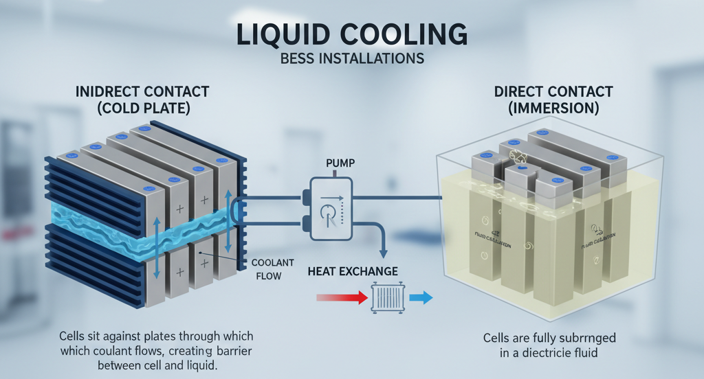
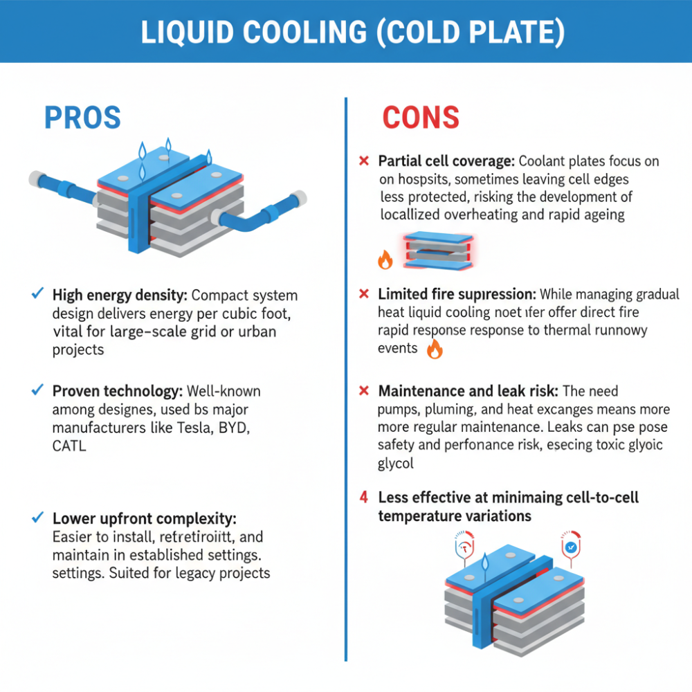
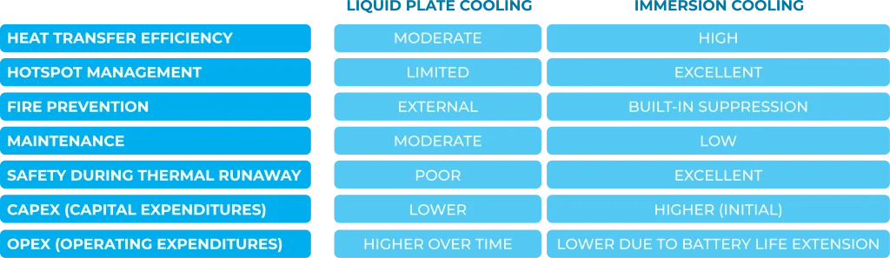
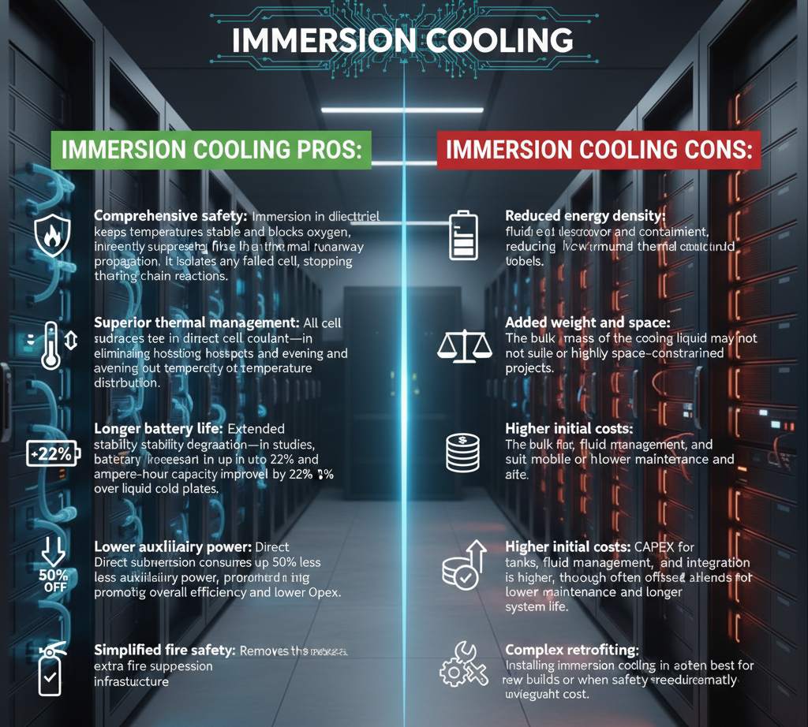
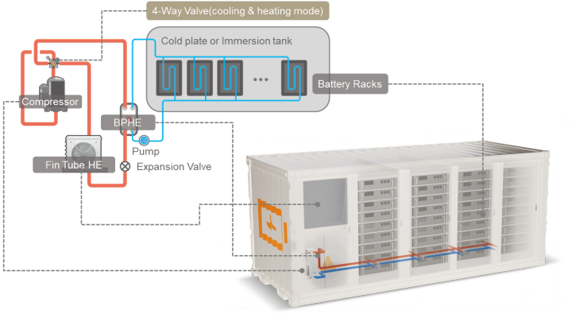

Choosing the right cooling strategy is critical for the safety, reliability, and performance of Battery Energy Storage Systems (BESS). Two leading options—liquid cooling and immersion cooling—serve distinct needs, and understanding their differences helps stakeholders select the optimal solution for their projects.
The Fundamentals: How Each Method Works
Liquid Cooling: This system circulates a liquid coolant—often a water-glycol mix or dielectric fluid—through plates, tubes, or jackets attached to (but not submerging) battery cells. Heat is conducted away from the cells to external exchangers. Liquid cooling is the norm for large-scale and compact, high-performance BESS installations due to its solid heat transfer and space efficiency. There are two approaches:
- Indirect contact (cold plate): Cells sit against plates through which coolant flows, creating a barrier between cell and liquid.
- Direct contact (immersion): Cells are fully submerged in a dielectric fluid.

Immersion Cooling: Here, battery cells are entirely submerged in a non-conductive, thermally stable dielectric liquid. The fluid contacts all cell surfaces, allowing rapid heat extraction and thermal uniformity. The system circulates fluid to maintain real-time temperature control across the battery array.

Comparative Advantages and Disadvantages
Liquid Cooling (Cold Plate)
Pros:
- High energy density: Compact system design delivers more energy per cubic foot, vital for large-scale grid or urban projects.
- Proven technology: Well-known among system designers, used by major manufacturers like Tesla, BYD, CATL.
- Lower upfront complexity: Easier to install, retrofit, and maintain in established settings. Suited for legacy projects.

Cons:
- Partial cell coverage: Coolant plates focus on hotspots, sometimes leaving cell edges less protected, risking the development of localized overheating and rapid ageing.
- Limited fire suppression: While managing gradual heat increases, liquid cooling does not offer direct fire suppression or rapid response to thermal runaway events.
- Maintenance and leak risk: The need for pumps, plumbing, and heat exchangers means more moving parts and regular maintenance. Leaks can pose safety and performance risks, especially if using toxic glycol.
- Less effective at minimizing cell-to-cell temperature variations.

Immersion Cooling
Pros:
- Comprehensive safety: Immersion in dielectric fluid keeps temperatures stable and blocks oxygen, inherently suppressing fires and preventing thermal runaway propagation. It isolates any failed cell, stopping chain reactions.
- Superior thermal management: All cell surfaces are in direct contact with coolant, eliminating hotspots and evening out temperature distribution.
- Longer battery life: Extended stability reduces cell degradation—in studies, battery lifespan increased by up to 22% and ampere-hour capacity improved by 22% over liquid cold plates.
- Lower auxiliary power: Direct submersion consumes up to 50% less auxiliary power, promoting overall efficiency and lower Opex.
- Simplified fire safety: Removes the need for extra fire suppression infrastructure.

Cons:
- Reduced energy density: Requires a fluid reservoir and containment, reducing how much energy can fit in a given volume.
- Added weight and space: The bulk and mass of the cooling liquid may not suit mobile or highly space-constrained projects.
- Higher initial costs: CAPEX for tanks, fluid management, and integration is higher, though often offset by lower maintenance and longer system life.
- Complex retrofitting: Installing immersion cooling in existing facilities can be challenging and often best for new builds or when safety requirements dramatically outweigh cost.
When to Use Liquid Cooling
- Legacy BESS systems not easily upgraded.
- Low-power or predictable thermal load installations: Rural grid-scale, commercial sites with moderate cycling.
- Space or weight-constrained projects: Where the compactness of the cold plate and minimized fluid mass are essential.

When to Use Immersion Cooling
- High energy-density, high-risk sites: Urban installations, EV fast-charging hubs, data centers, microgrids.
- Mission-critical and safety-driven applications: Where fire suppression, uptime, and battery longevity are paramount.
- Extreme temperatures or volatile environments: Areas that demand the fastest possible response to thermal events.
- Community-sensitive locations: Projects near populated areas requiring maximum fire prevention and risk mitigation.
- Operators prioritizing total lifecycle value: Willing to invest in higher CAPEX for dramatic reductions in maintenance and replacement costs.
Conclusion
Liquid cooling remains the reliable default for established low-risk BESS applications and where maximizing energy density or retrofitting is essential. Immersion cooling represents the new gold standard for safety and long-term value, excelling wherever thermal runaway, fire risk, and operational redundancy cannot be compromised. Decision-makers should weigh their priorities: for most future-proof commercial and utility-scale projects, immersion cooling is quickly becoming the strategic choice for both resilience and total cost optimization.